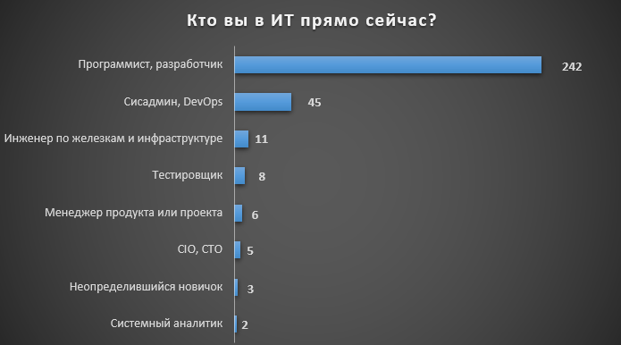
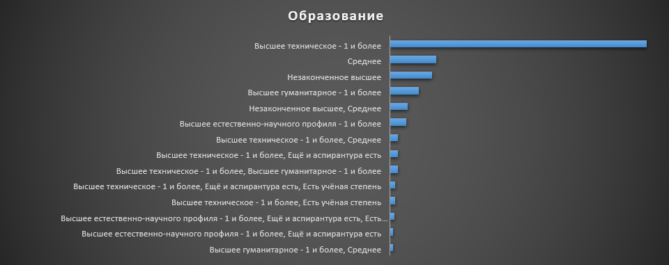
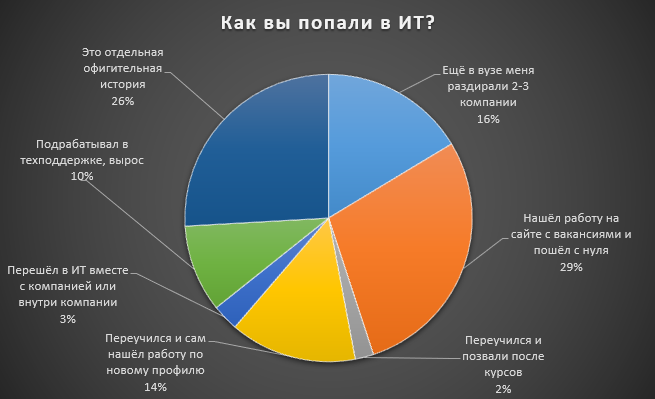
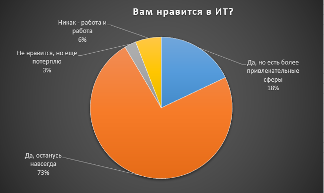
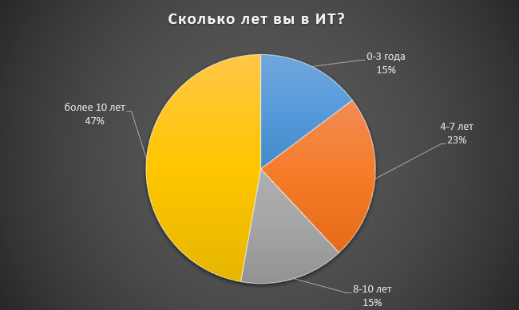
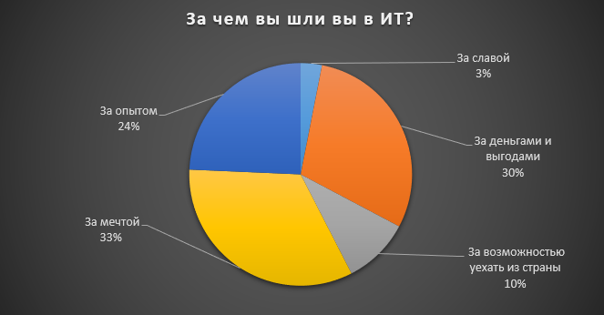

Круто ты попал в ИТ
Когда я модерирую Хабр, периодами случаются недели или даже месяцы статей «Как войти в айти». Часть из них вызывают дискуссию и одобрение, часть — уходят в минус, довольно большая доля отклоняется из модераторской Песочницы. Как правило, к последним относятся короткие, на несколько абзацев, истории о том, сколько открытий чудных дарует первое открытие лекции по программированию, или, в лучшем случае, первый hello world. В таких условиях не могла не зародиться мысль о том, чтобы узнать, а какие истории стоят за теми, кто уже попал? Всё ли так классно, романтично и вдохновляюще и нет ли случайно разочарований? На наш опрос откликнулось 342 читателя Хабра — и мы получили колоссальное количество историй. И вот они — по-настоящему вдохновляют, радуют, печалят… существуют!
Эта статья планировалась как небольшая страничка с историями хабровчан — мы рассчитывали собрать штук 10, при идеальном раскладе 20. А теперь идите, берите много чая, кофе или просто откиньтесь в кресле, чтобы познакомиться с историями поближе — мы получили 110 вдохновляющих, смешных, немного злых, иногда даже грустных историй о том, как читатели и пользователи Хабра попали в ИТ. Рука дрогнула отобрать какие-то лучшие — публикуем почти все. Уверена, что эти истории кого-то вдохновят, кому-то подарят уверенность, кого-то подтолкнут к окончательному решению.
Сперва - немного о результатах опроса
Мы задали пользователям Хабра несколько вопросов об их отношениях с ИТ.
 Высшее гуманитарное образование у 5 из 6 ответивших менеджеров продуктов и проектов, у 4% ответивших среди программистов (10 из 241), у 13% сисадминов и DevOps (6 из 45). Ещё 5% программистов имеют образование естественно-научного профиля.
Как видите, основные пути попадания в ИТ распределены довольно равномерно. Показательно, что 16% опрошенных для попадания в ИТ проходили какое-либо специальное обучение или учились самостоятельно, а 13% получили шанс попасть в ИТ через техническую поддержку или с помощью горизонтального перемещения внутри компании. И если вход в какую-либо отрасль через саппорт был популярным карьерным путём ещё в 2000-х, то переходы внутри компании - довольно новый тренд, и важно, чтобы он в дальнейшем рос.
Примечательно, что во всех группах опыта работы в ИТ доли тех, кто считает работу просто обычным трудом, кто предан ИТ навсегда, кто терпит ради каких-то интересов и кто считает, что существуют более привлекательные сферы, распределены практически одинаково. Думаю, это говорит о том, что сотрудник ИТ-компании растёт вместе с задачами и у него не возникает ложных искажений, связанных с обычными в других сферах проблемами недооценённости, потери интереса к работе из-за неинтересных задач и т.д. Неожиданно хороший маркер.
Если вы опытный, уверенный в себе автор, который может рассказать любую техническую историю классным языком, не боится правок, общения с заказчиком, разноплановой работы и погружения в интересные и разные темы, срочно заполняйте анкету!
33% идут в ИТ в том числе за мечтой - и это очень круто, потому что именно разработчики, сисадмины, менеджеры проектов, тестировщики, безопасники и т.д. сегодня меняют реальность, делают мир удобным, доступным, практически совершенным.
А вот и эти истории
Работал инженером по качеству на тракторном заводе. Понял, что ИТ нравится больше, чем собирать тракторы.
Работал инженером по качеству на тракторном заводе. Понял, что ИТ нравится больше, чем собирать тракторы.
Ещё со школы увлекался решением математических задач на языках Basic, Pascal потом участие в школьных, республиканских олимпиадах по Информатике. Уже тогда понял, что моя карьера будет в ИТ.